A Business Report on
Customer Insights and Trends Analysis
Introduction
This report provides a comprehensive analysis of the given data
transaction_data.csv, focusing on key metrics, major
data points, correlations, and trends. The dataset contains the
following features:
1.1 Feature Descriptions
| Features | Data Type | Description |
|---|---|---|
| First Name | object | Represents the first name of the individual. |
| Last Name | object | Represents the last name of the individual. |
| object | The email address associated with the individual. | |
| Gender | object | Gender identity of the individual. |
| Age | int64 | The age of the individual. |
| IP Address | object | The internet protocol address of the user. |
| Location | object | The geographic location of the individual. |
| Date of Transaction | object | The date when the transaction occurred. |
| Service Used | object | The service or product used by the individual. |
| Transaction Amount | object | The amount of money involved in the transaction. |
| Payment Method | object | The method of payment used for the transaction. |
| Membership Status | object | The current membership status of the individual. |
Table 1: Detailed Variable Explanations and Feature Information
The report is organized as follows:
- Section 1: Overview of the workflow and basic understanding of the data fields.
- Section 2: Procedure of the analysis and tools used.
- Section 3: Findings from the given dataset.
- Section 4: Conclusion of the report.
Methodology
2.1 Tools and Techniques
The analysis is performed using Jupyter Notebook as the integrated development environment (IDE), with Python as the programming language. The following libraries and techniques are employed for data handling, analysis, and visualization:
- NumPy: Used for numerical calculations and data manipulation.
- Pandas: Used for handling and processing the dataset, facilitating easy data manipulation.
- Matplotlib and Seaborn: Utilized for creating various visualizations, ensuring clear representation of trends and patterns.
2.2 Design Patterns and Visualization Style
A customized design pattern is applied to ensure consistency and aesthetic appeal across the visualizations:
- The 'rose-pine' style is used for Matplotlib plots, offering a calm, cohesive look.
- Custom fonts are integrated through Matplotlib font management:
- 'SourceCodePro-Regular.otf' is used as the font family for all text within the plots, enhancing readability and consistency.
-
Font properties are adjusted globally using
rcParams, ensuring uniform text styling across titles, labels, and tick marks. - The following settings are configured for an optimal visual experience:
- Text color, axis labels, and titles are set to a soft shade of gray (#767190) for a clean and subtle design.
- The font sizes for various elements, such as the legend, axis titles, and tick labels, are globally set to ensure readability and consistency:
- Legend and axis titles are set to a size of 18.
- Tick labels are set to a font size of 16.
2.3 Plot Customization
-
Custom Pie Chart: A specific function,
styled_pie_chart, is defined to create visually appealing pie charts with a distinct color palette and text style, using the 'bright' color scheme from Seaborn. - Color Palette: The visualizations utilize an aesthetically designed color scheme, primarily focusing on muted tones, to ensure the plots are both informative and visually engaging.
2.4 Warnings and Plot Settings
-
Warnings are suppressed during execution using
warnings.filterwarnings('ignore')to avoid unnecessary clutter in the output. -
The inline magic command
%matplotlib inlineensures that plots are displayed directly within the notebook for seamless analysis.
This combination of tools, design patterns, and customized visual settings provides an effective environment for conducting data analysis, ensuring that the results are both accurate and visually appealing.
Results
3.0 Univariate Analysis
3.0.1 Exploring Gender Identity: Count and Bar Plot Visualizations
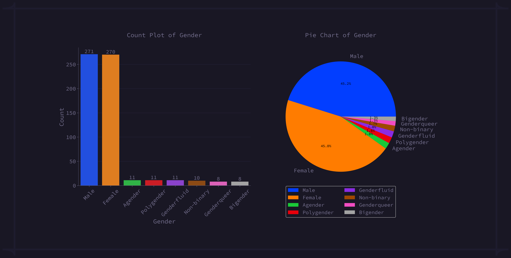fig 3.0.1: Gender Distribution: Count and Bar Analysis
From the plot, we can see that:
- 45.2% (271) of the total customers are male.
- 45% (270) of the total customers are female.
-
The rest of the customers are distributed as follows:
- Agender: 1.8% (104)
- Polygender: 1.8% (104)
- Genderfluid: 1.8% (104)
- Non-binary: 1.7% (99)
- Bigender: 1.3% (74)
- Genderqueer: 1.3% (74)
3.0.2 Exploring Location Identity: Count and Bar Plot Visualizations
From the dataset 41 different locations (Country) have been found, among them top 10 most repeated locations are as follows:
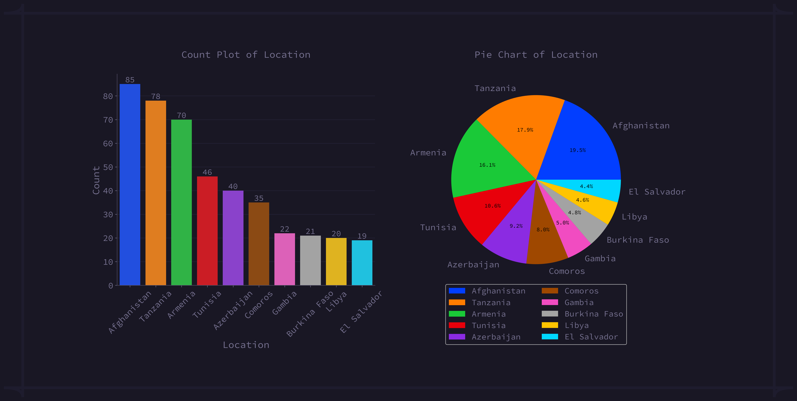fig 3.0.2: Location Distribution: Count and Bar Analysis
From the plot, we can see that:
- Afghanistan: 85 repetitions (19.5%) The country with the most repetitions in the data set.
- Tanzania: 78 repetitions (17.9%) Ranked second with a close percentage.
- Armenia: 70 repetitions (16.1%) Positioned third in the list.
- Tunisia: Ranked 4th. In fourth position with a significant number of repetitions.
- Azerbaijan: Ranked 5th. Fifth in line with a steady frequency.
- Comoros: Ranked 6th. In the sixth place, demonstrating a unique trend.
- Gambia: Ranked 7th. Seventh in terms of repetition.
- Burkina Faso: Ranked 8th. Positioned 8th in the dataset.
- Libya: Ranked 9th. Ninth in the list, showing significant repetition.
- El Salvador: Ranked 10th. Completes the top 10 with a noteworthy repetition rate.
3.0.3 Exploring Service Used Identity: Count and Bar Plot Visualizations
Four different services have been found and found the 'Eva' as the most repeated service with 155 counts and the percentage is 25.8. STL1, Exp, and STL 2, is in 2nd, 3rd and 4th with a total of 150, 149 and 146 counts respectively.

fig 3.0.3: Service Used Distribution: Count and Bar Analysis
3.0.4 Exploring Payment Method Identity: Count and Bar Plot Visualizations
Five different payment methods are available for transactions, among them Stripe is at the top with the most transaction count of 148 times. Wise, Bank Transfer, Credit Card and PayPal were used 121, 113, 109 and 109 times respectively. Payment Method counts and their respective percentage is shown in the picture below -
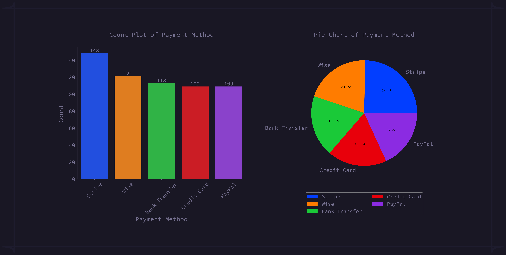fig 3.0.4: Payment Method Distribution: Count and Bar Analysis
3.0.5 Exploring Membership Status Identity: Count and Bar Plot Visualizations
Four different membership statuses have been found and these are IRON, BRONZE, SILVER and GOLD. I've found BRONZE as the most repeated Membership Status with 164 counts, GOLD 150 counts, SILVER 146 counts, and IRON 140 counts. The distribution chart is shown below -
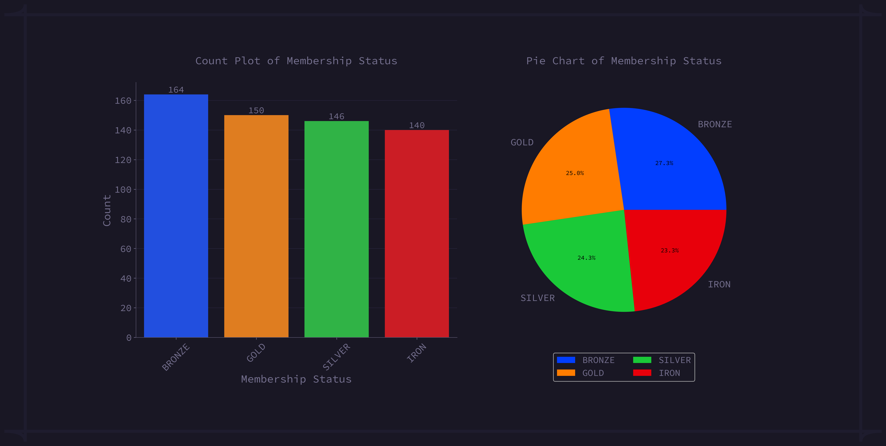fig 3.0.4: Membership Status Distribution: Count and Bar Analysis
3.1 Bivariate Analysis
3.1.0 Gender Distribution Based On Service Used
Most of the females are using Eva, on the other hand most of male are using Exp rather than other services.
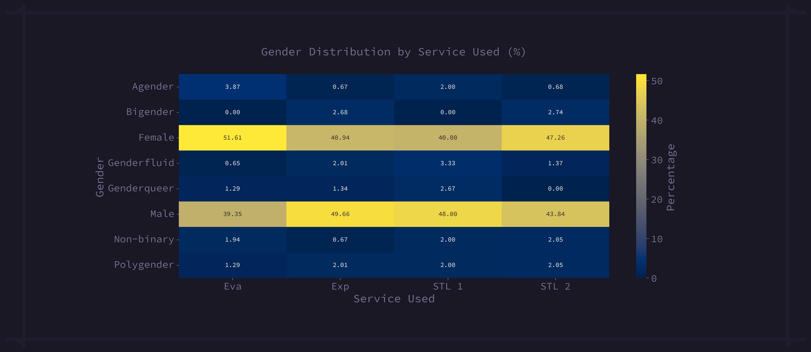fig 3.1.1: Gender Distribution By Payment Method
3.1.1 Gender Distribution Based By Payment Method
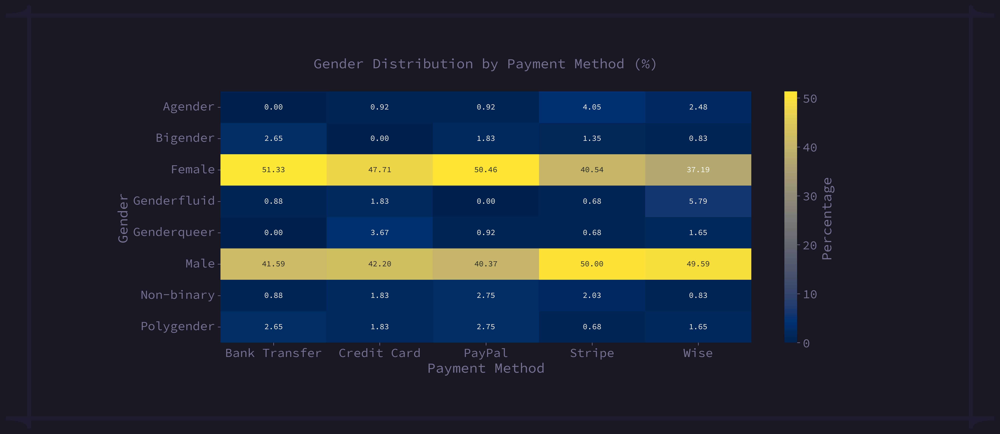fig 3.1.1: Gender Distribution By Payment Method
From the above heatmap we can see that most of the females (51.33%) are choosing Bank Transfer as payment method and most of the male (50%) are choosing Stripe rather than other payment methods.
3.1.2 Gender Distribution By Membership Status

fig 3.1.2: Gender Distribution By Membership Status
Again, For most of the females (49.29%), the membership status is IRON on the other hand Gold for most of the male (48%).
3.1.3 Mean and Sum of Transaction Amount by Gender
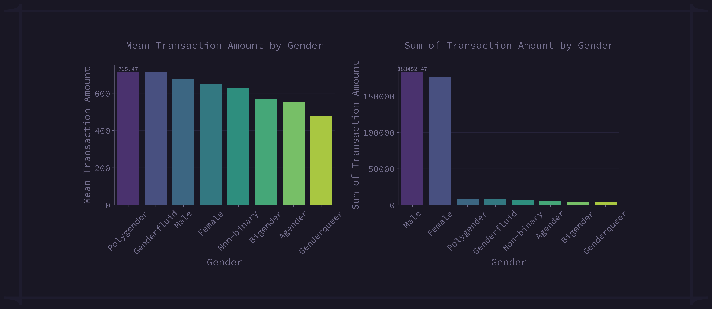fig 3.1.3: Mean and Sum of Transaction Amount by Gender
3.1.4 Gender Distribution in Top Ten Locations
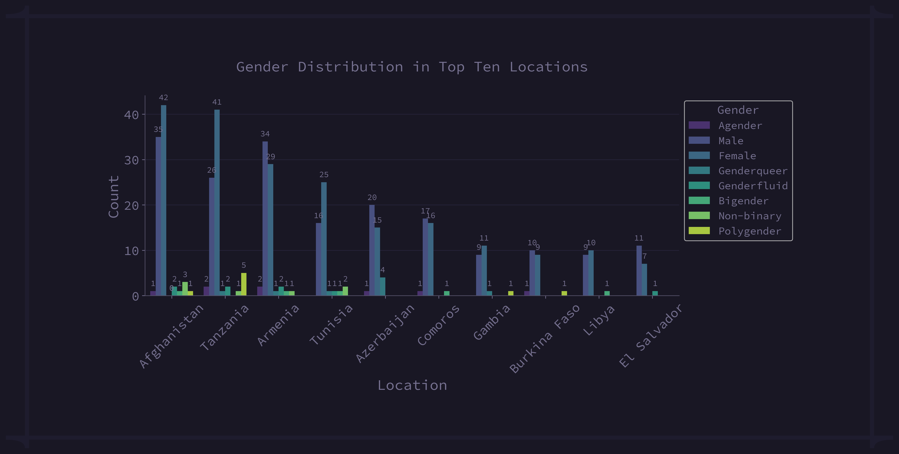fig 3.1.4: Gender Distribution in Top Ten Locations
3.1.5 Age Statistics (Minimum, Average, and Max) By Gender
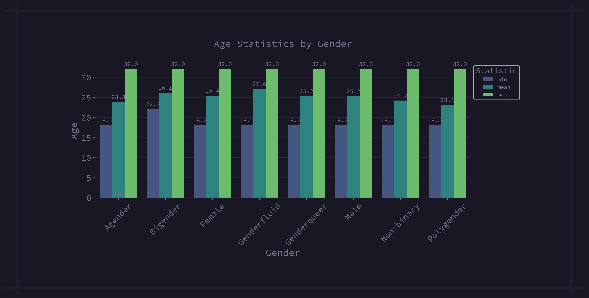fig 3.1.5: Age Statistics (Minimum, Average, and Max) By Gender
3.1.6 Popular Services Based on Top Ten Locations
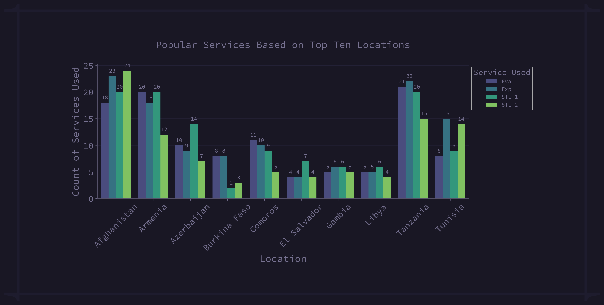fig 3.1.6: Popular Services Based on Top Ten Locations
We can see that, the STL2 is the most popular services in Afghanistan, both Eva and STL1 in Armenia, STL1 in Azerbaijan, EVA and Exp in Burkina Faso, Eva in Comoros, STL1 in El Salvador, both Exp and STL1 in Gambia, STL1 in Libya, Exp in Tanzania and Exp in Tunisia.
3.1.7 Popular Payment Method Based on Top Ten Locations
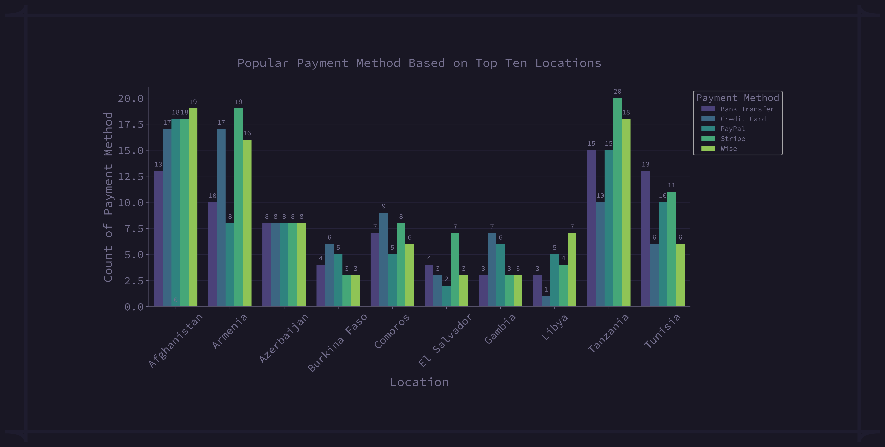fig 3.1.7: Popular Payment Method Based on Top Ten Locations
From the above figure, we can see that Wise is the most popular payment method in Afghanistan and Libya. Stripe is most popular in Armenia, El Salvador and Tanzania. In Azerbaijan the customers are using all the payment methods uniformly. Credit Cards are more preferred in Burkina Faso, Comoros and Gambia. In Tunisia the most popular payment method is Bank Transfer rather than other available payment methods.
3.1.8 Membership Status Based on Top Ten Locations
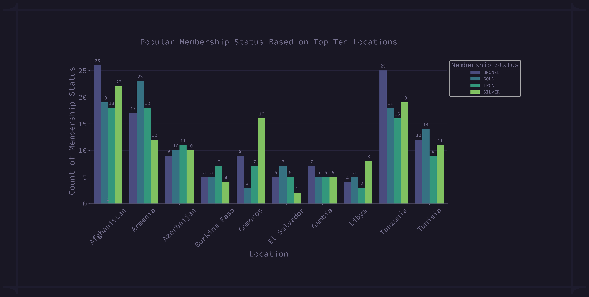fig 3.1.8: Membership Status Method Based on Top Ten Locations
Most of the:
- Gold: Armenia, El Salvador, and Tunisia.
- Silver: Comoros and Libya.
- Bronze: Afghanistan, Tanzania, and Gambia.
- Iron: Azerbaijan and Burkina Faso.
3.1.9 Minimum, Average, and Maximum Transaction Amounts by Service Used
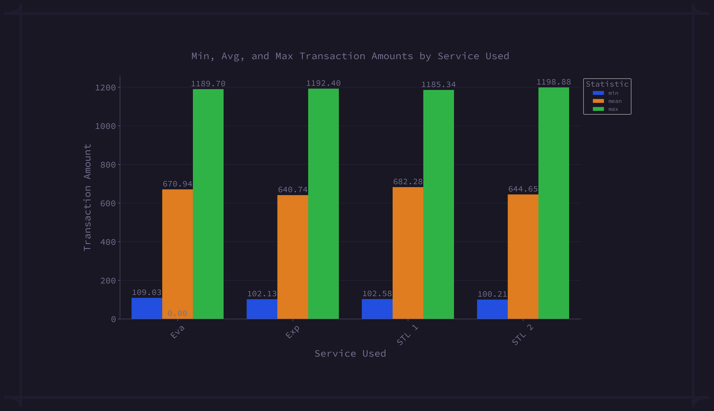fig 3.1.9: Minimum, Average, and Maximum Transaction Amounts by Service Used
| Rank | Service | Transaction Amount (Avg) |
|---|---|---|
| 1 | STL 1 | $682.28 |
| 2 | Eva | $670.94 |
| 3 | STL 2 | $644.65 |
| 4 | Exp | $640.74 |
Table 2: Average Transaction Amount by Service Used
3.2 Correlation
3.2.0 Numerical Features (Age, Transaction Amount)
| Rank | Payment Method | Transaction Amount (Avg) |
|---|---|---|
| 1 | Credit Card | $677.04 |
| 2 | Stripe | $671.15 |
| 3 | Wise | $664.44 |
| 4 | Bank Transfer | $647.08 |
| 5 | PayPal | $635.40 |
Table 3: Numerical Features (Age, Transaction Amount)
For the numerical features (Age, Transaction Amount) Pearson Correlation has been employed and found no (strong) correlation between 'Age' and 'Transaction Amount'. The heatmap below shows the correlation between 'Age' and 'Transaction Amount'.
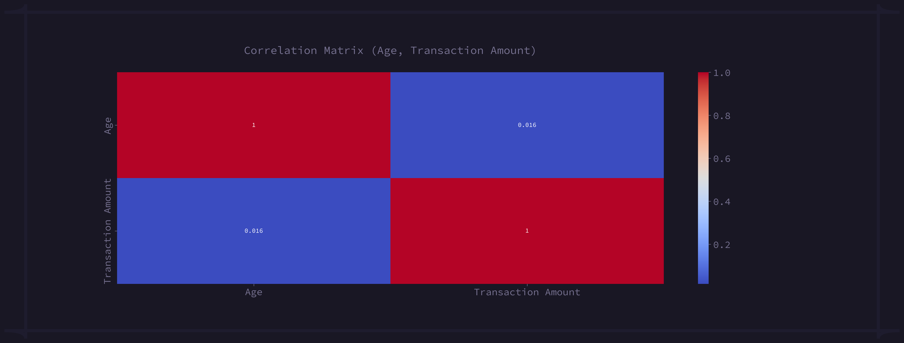fig 3.2.0: Numerical Features (Age, Transaction Amount)
The below Regression Plot shows the changes of Age and Transaction Amount with respect to one another.
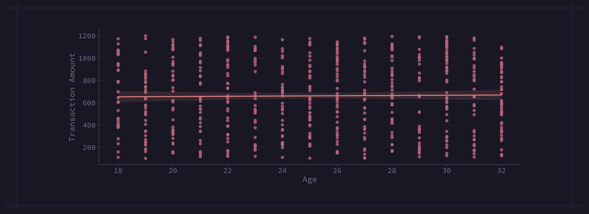fig 3.2.0.1: Regression Plot: Age vs. Transaction Amount
3.2.1 Correlation Between Categorical Features
Cramer's V has been employed to measure the association among the nominal variables. Correlation between the nominal features are shown below using a heatmap.
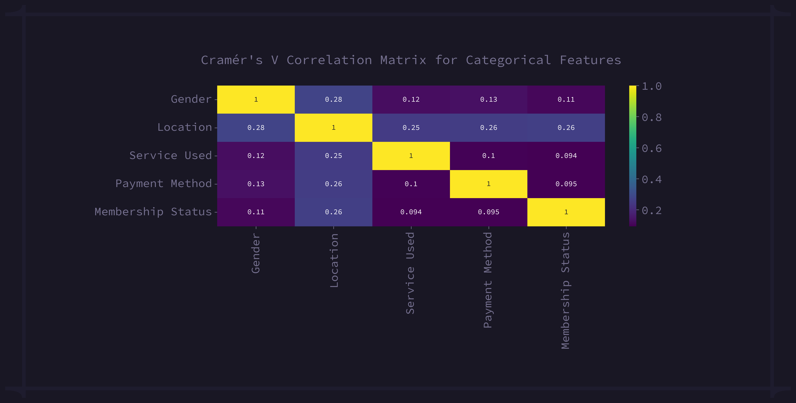fig 3.2.1: Correlation Between Categorical Features
Cramer's V provides value between 0 and 1, indicating weak and strong association among the features and 0 indicates no association between features.
3.3 Time Series Analysis
A set of questions has been made to get more insight from the dataset, the questions are as follows -
3.3.0 In which year most of the transactions have been recorded?
2023 is the most frequent in the dataset because most of the transactions were recorded during this year.
fig 3.3.0: Year-wise Distribution: Count Plot & Pie Chart
3.3.1 In which season most of the transactions have been recorded?
Summer is the most frequent season because most of the transactions were recorded during this season.
fig 3.3.1: Total Transaction in each Season
3.3.2 Which month has the highest total transaction amount?
In June, the highest total transactions were recorded with $44526.52.
fig 3.3.2: Total Transaction in each Month
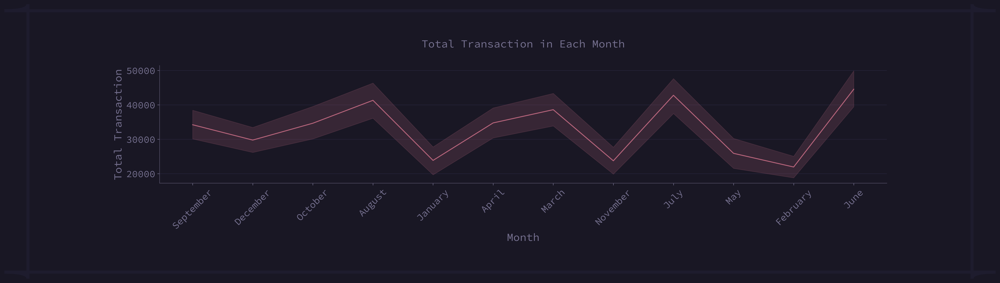fig 3.3.3: Monthly Transaction Trends
3.3.4 What was the total transaction for each month in each year?
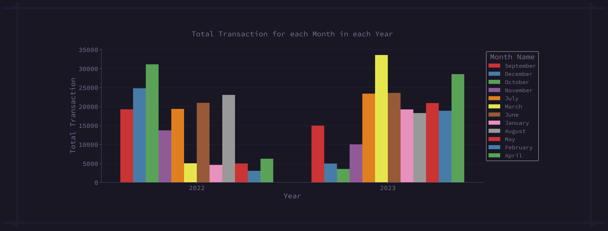fig 3.3.4: Total Transaction for each Month in each Year
From the plot, we can see that:
- 2022: A total of $31,119.76 was recorded in October.
- 2023: A total of $33,565.89 was recorded in March.
3.3.5 What was the total transaction for each season in each year?
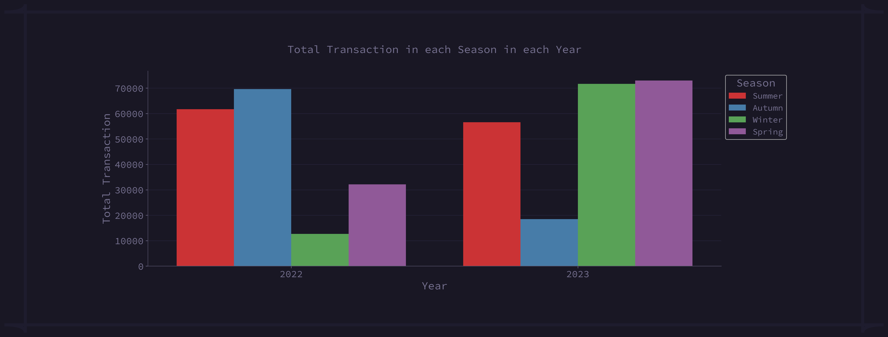fig 3.3.5: Total Transaction in each Season in each Year
From the plot, we can see that:
- In 2022: Autumn with $69632.96.
- In 2023: Spring with $72997.81.
3.3.6 What was the total transaction over time in 2022, and 2023?
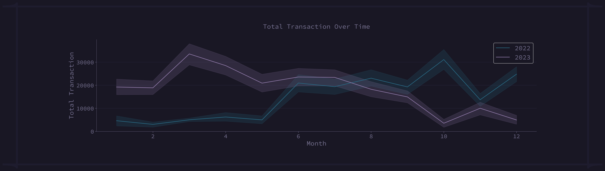fig 3.3.6: Total Transaction Over Time
In the above line plot we can see the total transaction over time (for each month in each year). In 2022, total transactions were increasing over time. On the other hand, we can see a different scenario in 2023. In 2023, total transactions increased till march but after that decreased till the end of the year.
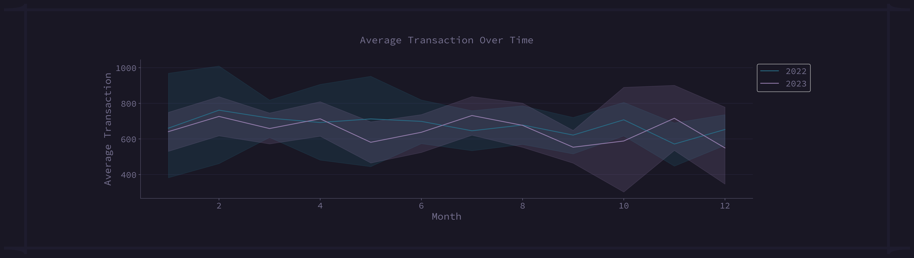fig 3.3.7: Average Transaction Over Time
But the average transaction amount was almost similar in both years.
Transaction Growth:
In 2022, the total transaction was $176170.69 and $219754.17 in 2023. We can conclude that a total of 24.73% total transaction has been increased in 2023.
Conclusion
This report highlights the key metrics, major data points, and correlations from the dataset. The visualization provides a clear picture of the characteristics of different attributes.